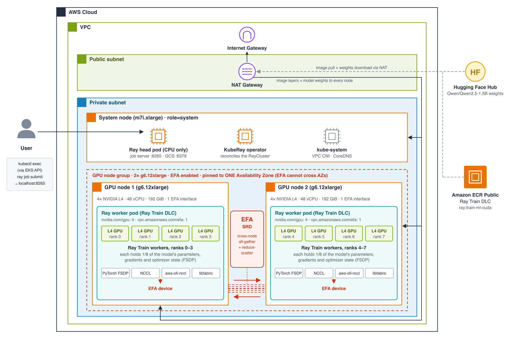

Multi-Node Ray Train on EKS¶
Run a distributed PyTorch FSDP training job with Ray Train across two GPU
nodes on Amazon EKS, using the Ray Train DLC. This is the training
counterpart to
inference/ray-serve/ray-serve-multi-node:
same KubeRay-on-EKS foundation, but a RayCluster running a job to completion
instead of a RayService serving traffic.
The Ray Train DLC ships Ray Train, PyTorch, and the EFA stack (libfabric and aws-ofi-nccl) already built and version-matched, so the worker image needs no build step -- it is a public, pre-built image. That is the thing this sample demonstrates: getting a correctly-configured multi-node, EFA-backed training job running on EKS without hand-building any of that stack yourself.
Success criteria¶
This sample's bar is infrastructure-level, not training quality -- the
training job itself (loss, convergence, dataset) is out of scope. What
deploy_ray_train_job.sh checks and gates on:
| # | Criterion | How it's checked |
|---|---|---|
| 1 | Both GPU nodes advertise their GPUs | nvidia.com/gpu allocatable on both nodes |
| 2 | Both GPU nodes advertise EFA | vpc.amazonaws.com/efa allocatable on both nodes |
| 3 | The job schedules and runs | head pod Ready, both worker pods Running |
| 4 | NCCL selected the EFA fabric, not sockets | worker logs show NET/OFI Selected provider is efa, and not Using network Socket |
| 5 | EFA's RDMA capability is present | fi_info -p efa inside a worker pod reports FI_RMA/FI_EP_RDM |
| 6 | The job starts and completes | ray job submit exits 0; train.py prints a [train] SUCCESS line per rank |
On RDMA, precisely: g6.12xlarge is EFA-capable with real, network-level
RDMA (libfabric read/write between hosts), but it does not have
GPUDirect RDMA (the NIC DMA'ing straight into GPU memory) -- that requires
p4d/p4de/p5/p5e/p5en/p6/trn1. Criterion 5 above confirms the
former; it is not evidence of the latter, and this README does not claim it.
On performance: this sample verifies that EFA carries the job, not that
EFA makes it faster. At this scale (2x g6.12xlarge, a 1.5B model), NCCL over
TCP sockets tuned with NCCL_SOCKET_NTHREADS=4 and NCCL_NSOCKS_PERTHREAD=4
performs about the same as EFA, so don't expect a measurable speedup here.
What this sample builds¶
Two g6.12xlarge GPU worker nodes (4x NVIDIA L4, 48 vCPU, 192 GiB, 1 EFA
interface each), each running 4 Ray Train workers -- WORLD_SIZE=8 total.
Ray Train's TorchTrainer full-parameter fine-tunes
Qwen/Qwen2.5-1.5B (ungated) with
PyTorch FSDP, which shards the model's parameters, gradients, and AdamW
optimizer state across every GPU in the job. Any FSDP all-gather/
reduce-scatter between a rank on one node and a rank on the other crosses the
node boundary over EFA.
code/train.py trains on synthetic token ids for a handful of steps -- the
point is exercising the real multi-node NCCL/EFA collective path, not
achieving a training result, so there is no dataset to stage.
Architecture¶

EKS cluster
├── system node group (m7i.xlarge x1) -- KubeRay operator + Ray head (CPU only)
└── gpu-workers node group (g6.12xlarge x2, EFA-enabled)
├── ray-worker pod (4 GPU, 1 EFA interface) -- Ray Train workers, ranks 0-3
└── ray-worker pod (4 GPU, 1 EFA interface) -- Ray Train workers, ranks 4-7
Prerequisites¶
Install the following tools before running any scripts:
- AWS CLI with credentials configured
- eksctl
- kubectl
- helm to install the KubeRay operator and GPU device plugins (auto-installed via
brewor the official script if missing) - envsubst is used to render the manifest
Verify that your AWS credentials are active, and check g6.12xlarge capacity
and G-family vCPU quota (2 x g6.12xlarge = 96 vCPU) in your target region
before picking one:
Directory Structure¶
ray-train/
scripts/ # Deployment and teardown scripts for EKS, node group, device plugins, KubeRay, and the job
manifest/ # KubeRay RayCluster manifest
code/ # The Ray Train training script (train.py)
Configuration¶
All scripts share a single configuration file: scripts/env.sh. Override any
variable by exporting it before running a script. env.sh also loads
scripts/.placement.env if it exists -- the REGION/GPU_AZ that
deploy_all.sh last chose -- so its values replace the REGION default
below; anything you export still wins. Delete that file to go back to the
defaults. Set the Region with REGION, not AWS_REGION: env.sh sets
AWS_REGION/AWS_DEFAULT_REGION from REGION, overriding whatever your
shell or AWS CLI profile has.
| Variable | Default | Description |
|---|---|---|
| CLUSTER_NAME | eks-cluster | EKS cluster name |
| REGION | us-east-2 | AWS region |
| K8S_VERSION | 1.36 | Kubernetes version |
| NODE_AMI_FAMILY | AmazonLinux2023 | Node AMI family, set explicitly rather than left to eksctl's default |
| SYSTEM_NODE_TYPE | m7i.xlarge | Instance type for system/head nodes |
| SYSTEM_NODE_COUNT | 1 | Number of system nodes |
| GPU_NODE_TYPE | g6.12xlarge | GPU worker instance type |
| GPU_NODE_COUNT | 2 | Number of GPU worker nodes |
| GPUS_PER_NODE | 4 | GPUs per GPU_NODE_TYPE -- must match the instance type if you change it |
| GPU_NODEGROUP_NAME | gpu-workers | Name of the GPU node group |
| CAPACITY_RESERVATION_ID | (empty) | An existing On-Demand Capacity Reservation to launch the GPU nodes into, e.g. cr-0123456789abcdef0. The node group targets it, its AZ is used, and the capacity search is skipped. Validated for state, instance type and available count; REGION must be the reservation's Region |
| GPU_AZ | (auto) | AZ for the GPU node group. Auto-picked from AZs that both offer GPU_NODE_TYPE and already have a cluster private subnet; if set explicitly, validated against that same intersection and rejected with a reason otherwise |
| ASSUME_YES | (empty) | Set to 1 to skip the "Proceed? (y/N)" prompt in deploy_cluster.sh/deploy_node_group.sh. Set by deploy_all.sh (and by find_gpu_capacity.sh when you accept its deploy offer) after their own single prompt -- not something you normally set by hand |
| DLC_IMAGE | public.ecr.aws/deep-learning-containers/ray:train-ml-cuda-v1.1 | Ray Train DLC image |
| KUBERAY_VERSION | 1.4.0 | KubeRay operator version |
| RAY_VERSION | 2.58.0 | Ray version (must match the image) |
| NVIDIA_DEVICE_PLUGIN_VERSION | 0.20.0 | NVIDIA device plugin Helm chart version |
| EFA_DEVICE_PLUGIN_VERSION | v0.5.32 | AWS EFA device plugin Helm chart version -- confirmed to allowlist g6.12xlarge |
| NAMESPACE | ray-train | Kubernetes namespace |
| RAY_CLUSTER_NAME | ray-train-cluster | Name of the RayCluster |
| MODEL_ID | Qwen/Qwen2.5-1.5B | Model fine-tuned by code/train.py |
| STEPS | 5 | Optimizer steps -- a correctness smoke test, not a training run |
| SEQ_LEN | 128 | Synthetic sequence length |
| BATCH_SIZE | 1 | Per-worker batch size |
| LEARNING_RATE | 0.00002 | Optimizer learning rate |
| NUM_WORKERS | 0 | Ray Train workers; 0 = auto-size to the cluster's GPU count (8) |
Quickstart: build the infrastructure, then run the job¶
Building the infrastructure and running the training job are separate steps. Infrastructure is slow, billed, and built once; the job is quick and you re-run it as often as you like, so a training failure never sends you back through cluster setup.
1. Build the infrastructure (cluster, GPU node group, device plugins, KubeRay) with one command:
cd scripts
./deploy_all.sh # search REGION from env.sh
./deploy_all.sh -r "us-east-2 us-east-1 us-west-2"
./deploy_all.sh --plan # show what it would do; creates nothing
g6.12xlarge capacity shifts between Regions/AZs day to day, so
deploy_all.sh first runs find_gpu_capacity.sh --probe to find where the
two nodes can actually launch (see Step 2 below), then runs
deploy_cluster.sh, deploy_node_group.sh, install_gpu_plugins.sh, and
install_kuberay.sh in that Region. If the node group can't launch in the
best AZ, it removes it and tries the next candidate AZ. It asks once
(Proceed with the whole chain without further prompts? (y/N); -y skips
even that) and stops after KubeRay. The chosen Region/AZ is saved to
scripts/.placement.env, which every other script reads, so later commands
target the same place without re-exporting anything. Every step is
idempotent: re-running after a failure picks up where it stopped, and an
already-ACTIVE GPU node group is reused rather than searched for again.
2. Run the training job (Step 5 below), as many times as you like:
To do both in one go, pass --train to deploy_all.sh.
Run each step by hand instead with the step-by-step section below.
Step-by-step deployment¶
Step 1: Create the EKS cluster¶
Provisions the EKS cluster (VPC, OIDC, core add-ons) and a CPU system node
group (m7i.xlarge, AmazonLinux2023 AMI) that runs system workloads, the
KubeRay operator, and the Ray head. Nodes run in private subnets with
outbound access through a NAT Gateway. Cluster subnets are placed in the
Availability Zones that actually offer $GPU_NODE_TYPE, so the GPU node
group always has a usable subnet. Idempotent: safe to re-run if interrupted.
15-20 minutes on a fresh run.
Step 2: Add GPU worker nodes¶
First, find an AZ where the two nodes can actually launch:
./find_gpu_capacity.sh # REGION from env.sh
./find_gpu_capacity.sh -r "us-east-2 us-east-1 us-west-2"
./find_gpu_capacity.sh -r us-east-2 --probe # confirm capacity (see below)
An instance type being offered in an AZ doesn't mean you can launch it
there. This script checks the three things that each fail independently:
the type is offered in the AZ, your On-Demand vCPU quota for the family has
room for GPU_NODE_COUNT nodes (2 x g6.12xlarge = 96 G/VT vCPUs), and the
cluster has a private subnet in that AZ. No read-only API reports
On-Demand capacity, so the table also shows the Spot placement score as a
rough signal. --probe gives the definitive answer by creating an
On-Demand Capacity Reservation for the nodes in each candidate AZ and
cancelling it immediately (billed at the On-Demand rate for the seconds it
exists). It prints the export REGION=... GPU_AZ=... to use and, for any
Region marked SHORT, the service-quotas command to request more.
When run on its own, it then offers once to build the infrastructure in the
recommended Region/AZ (deploy_cluster.sh through install_kuberay.sh, the
same chain as deploy_all.sh but without its AZ fallback or saved
placement). Like deploy_all.sh, it stops after KubeRay. It skips the offer,
and tells you why, if the cluster already exists without a subnet in that AZ;
see AZ/subnet resolution below.
Then create the node group:
./deploy_node_group.sh # GPU_AZ auto-picked and cluster-checked
GPU_AZ=us-east-2b ./deploy_node_group.sh # or pin one explicitly
Creates the GPU node group: 2x g6.12xlarge with EFA enabled, pinned to a
single AZ (EFA cannot cross AZs), labeled role=gpu-worker so the Ray workers
target them via a nodeSelector, and labeled nvidia.com/gpu.present=true so
the NVIDIA device plugin's default affinity matches without needing Node
Feature Discovery. Runs in private subnets with no public IPs. AmiType is
resolved automatically to the accelerated, GPU-capable variant of
NODE_AMI_FAMILY -- the driver ships with that AMI, but is not yet advertised
to kubelet (that's the device plugin's job, next step). 3-5 minutes.
AZ/subnet resolution is cluster-aware, not just capacity-aware.
GPU_NODE_TYPE being offered in an AZ doesn't mean the cluster has a
subnet there -- capacity can shift to an AZ the cluster's VPC was never given
a subnet in (e.g. the cluster predates that AZ having capacity, or was
created with a different AZ set). resolve_gpu_az in scripts/_lib.sh
intersects "AZs offering GPU_NODE_TYPE" with "AZs the cluster actually has
a private subnet in" and picks (or validates GPU_AZ against) that
intersection only; deploy_node_group.sh then resolves the AZ to the
cluster's exact subnet id and passes that to eksctl directly (subnets:, not
availabilityZones:), so the node group cannot land in a subnet other than
the cluster's own. If the intersection is empty, the script fails immediately
with the mismatched AZ lists and the fix, instead of letting eksctl discover
it the slow way as a stuck CloudFormation stack.
Step 3: Install the GPU device plugins¶
The accelerated AMI provides the NVIDIA driver and the EFA kernel module, but
neither is advertised to kubelet as an allocatable resource without a device
plugin DaemonSet -- a fresh cluster has neither installed. This installs both
at pinned versions and waits for both DaemonSets to be Ready on every GPU
node before printing nvidia.com/gpu/vpc.amazonaws.com/efa allocatable
counts. A healthy Helm release is not evidence the DaemonSet is running --
both plugins have their own node-affinity requirements (an instance-type
allowlist for EFA, the nvidia.com/gpu.present label for NVIDIA), so this
step verifies the actual DaemonSet status, not just helm list. 1-2 minutes.
Step 4: Install the KubeRay operator¶
Installs the KubeRay operator via Helm, pinned to the system node group.
KubeRay watches the RayCluster you apply next and wires the head-to-worker
join automatically. Idempotent. 1-2 minutes.
Step 5: Deploy the RayCluster and run the training job¶
This is the sample's test script, and it gates on the success criteria above.
It renders manifest/raycluster.yaml and applies it, re-checks
nvidia.com/gpu/vpc.amazonaws.com/efa are allocatable (fails fast here
rather than as an opaque Pending timeout if a device plugin didn't
schedule), waits for the head pod to be Ready and both worker pods to be
Running, copies code/ onto the head pod, then runs:
kubectl exec <head-pod> -n ray-train -c ray-head -- \
ray job submit --address http://localhost:8265 --working-dir /tmp/ray-train-code -- \
python3 train.py --model_id Qwen/Qwen2.5-1.5B --steps 5 --seq_len 128 \
--batch_size 1 --learning_rate 0.00002 --num_workers 0
The job is submitted from inside the head pod (port 8265 is never exposed outside the cluster). Each Ray Train worker downloads the model weights from Hugging Face itself on first load, out through the NAT Gateway; there is no S3 staging step, and the 4 workers in a pod share one download cache, which is lost when the pod is replaced.
ray job submit blocks and streams the job's logs; the script exits non-zero
if the job fails. After the job completes it checks the worker logs for the
EFA confirmation line (and, separately, for the sockets-fallback line -- a
job over TCP looks identical to a healthy one in kubectl get pods), then
runs fi_info -p efa inside a worker pod to confirm RDMA capability. It exits
non-zero if either check fails, so the whole script works as a CI gate on all
six criteria, not just "the job exited 0."
Check status¶
Shows the RayCluster state, the head + worker pods (with the node each landed on), and GPU capacity.
Confirming EFA and RDMA yourself¶
A healthy deployment: the head and KubeRay operator on the CPU system node, one worker per GPU node, each advertising 4 GPUs and 1 EFA interface.
$ kubectl get nodes -L role,node.kubernetes.io/instance-type,topology.kubernetes.io/zone
NAME ROLE INSTANCE-TYPE ZONE
ip-192-168-126-175 system m7i.xlarge sa-east-1b
ip-192-168-70-51 gpu-worker g6.12xlarge sa-east-1a
ip-192-168-92-26 gpu-worker g6.12xlarge sa-east-1a
$ kubectl get nodes -l role=gpu-worker \
-o custom-columns='NAME:.metadata.name,GPU:.status.allocatable.nvidia\.com/gpu,EFA:.status.allocatable.vpc\.amazonaws\.com/efa'
NAME GPU EFA
ip-192-168-70-51 4 1
ip-192-168-92-26 4 1
NCCL runs inside the Ray Train worker actors, which log to Ray's per-worker
session logs (/tmp/ray/session_*/logs/) inside the pod, not the container
stdout -- so kubectl logs won't show these lines; grep the session logs:
# NCCL's transport choice
WPOD=$(kubectl get pod -n ray-train -l ray.io/node-type=worker -o jsonpath='{.items[0].metadata.name}')
kubectl exec "$WPOD" -n ray-train -c ray-worker -- \
bash -c 'grep -rhiE "NET/OFI Selected provider|Libfabric|Using network Socket" /tmp/ray/session_*/logs/'
Captured output:
NCCL INFO NET/OFI Initializing aws-ofi-nccl 1.20.0
NCCL INFO NET/OFI Selected provider is efa, fabric is efa (found 1 nics)
NCCL INFO Channel 00/0 : 7[3] -> 0[0] [receive] via NET/Libfabric/0
7[3] -> 0[0] is a collective between a rank on one node and a rank on the
other, riding NET/Libfabric over EFA. Using network Socket or Selected
provider is sockets would mean it is not -- check that the pod requested
vpc.amazonaws.com/efa, that the EFA device plugin is Ready on that node, and
that FI_PROVIDER=efa reached the container.
# EFA's RDMA capability (network-level; not GPUDirect)
WPOD=$(kubectl get pod -n ray-train -l ray.io/node-type=worker -o jsonpath='{.items[0].metadata.name}')
kubectl exec "$WPOD" -n ray-train -c ray-worker -- fi_info -p efa
Captured output -- look for FI_EP_RDM (network-level RDMA):
Beyond this sample¶
- True GPUDirect RDMA. Swap
GPU_NODE_TYPE/GPUS_PER_NODEfor ap4d/p4de/p5/p5e/p5en/p6/trn1instance to exercise transfers straight into GPU memory. Everything else in this sample is unchanged. - Placement group. This sample pins the GPU node group to a single, explicitly-resolved AZ, which is EFA's real requirement. A cluster placement group additionally tightens physical proximity within that AZ for lower, more consistent latency -- worth adding if you're chasing bandwidth, not required for the correctness criteria above.
- Shared storage for real training.
code/train.pyhas no dataset or checkpoint to persist, and pulls the model straight from Hugging Face, so there's no FSx/S3 dependency here. A real training job that stages a dataset/model or checkpoints across worker restarts needs shared storage such as FSx for Lustre or ans3://URI -- see the Ray Train DLC EKS guide for the FSx-backed manifest shape.
Teardown (reverse order)¶
./delete_ray_train_job.sh # Delete the RayCluster
./install_kuberay.sh cleanup # Uninstall the KubeRay operator
./install_gpu_plugins.sh cleanup # Uninstall the GPU device plugins
./delete_node_group.sh # Delete the GPU node group
./delete_cluster.sh # Delete the EKS cluster
These target the Region saved in scripts/.placement.env (if deploy_all.sh
created one). Delete that file afterwards if your next deployment should
start from the env.sh defaults.
Cost¶
Running cost is roughly $9.50/hr while the GPU node group is up: 2x
g6.12xlarge, the EKS control plane, and a NAT Gateway (no FSx in this
sample). Tear down when not actively working with it.
Scripts Quick Reference¶
| Action | Command |
|---|---|
| Build all infrastructure (stops after KubeRay) | ./deploy_all.sh [-r "regions"] [--plan] [-y] |
| Build infrastructure + run the job | ./deploy_all.sh --train |
| Deploy cluster | ./deploy_cluster.sh |
| Find an AZ with GPU quota/capacity | ./find_gpu_capacity.sh [-r "regions"] [--probe] |
| Deploy GPU nodes | ./deploy_node_group.sh |
| Install GPU device plugins | ./install_gpu_plugins.sh |
| Install KubeRay | ./install_kuberay.sh |
| Deploy RayCluster + run training job | ./deploy_ray_train_job.sh |
| Check status | ./deploy_ray_train_job.sh status |
| Delete RayCluster | ./delete_ray_train_job.sh |
| Uninstall KubeRay | ./install_kuberay.sh cleanup |
| Uninstall GPU device plugins | ./install_gpu_plugins.sh cleanup |
| Delete GPU nodes | ./delete_node_group.sh |
| Delete EKS cluster | ./delete_cluster.sh |
License¶
This library is licensed under the MIT-0 License. See the LICENSE file.